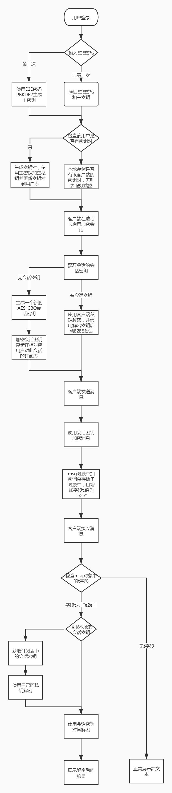
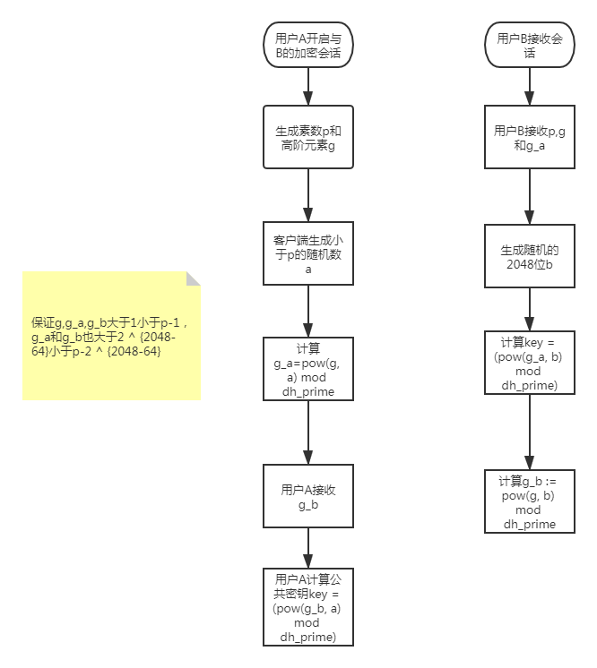

端对端加密
1.简介
End-to-end encryption (E2EE) is a system of communication where only the communicating users can read the messages. In principle, it prevents potential eavesdroppers – including telecom providers, Internet providers, and even the provider of the communication
service – from being able to access the cryptographic keys needed to decrypt the conversation.端到端加密（E2EE）是一种通信系统，其中只有进行通信的用户才能阅读消息。原则上，它可以防止潜在的窃听者（包括电信提供商，Internet提供商，甚至通信提供商服务）能够访问解密对话所需的加密密钥。
The term “end-to-end encryption” originally only meant that the communication is never decrypted during its transport from the sender to the receiver.For example, around 2003, E2EE has been proposed as an additional layer of encryption for GSM or TETRA,in addition to the existing radio encryption protecting the communication between the mobile device and the network infrastructure. This has been standardised by SFPG for TETRA.Note that in TETRA E2EE, the keys are generated by a Key Management Centre (KMC) or a Key Management Facility (KMF), not by the communicating users.
Later, around 2014, the meaning of “end-to-end encryption” started to evolve requiring that not only the communication stays encrypted during transport, but also that the provider of the communication service is not able to decrypt the communications either by having access to the private key, or by having the capability to undetectably inject an adversarial public key as part of a man-in-the-middle attack. This new meaning is now the widely accepted one.
“端到端加密”最初仅表示通信从发送方到接收方的传输过程中永远不会解密。 例如，2003年左右，E2EE已经被提出作为加密额外层GSM 或TETRA，在除了现有的无线电加密保护移动设备和网络基础设施之间的通信。SFPG已将其标准化为TETRA。请注意，在TETRA E2EE中，密钥是由密钥管理中心（KMC）或密钥管理工具（KMF）生成的，而不是由通信用户生成的。
后来，大约在2014年，“端到端加密”的含义开始发展，不仅要求通信在传输过程中保持加密，而且通信服务的提供者必须不能够解密通信无论是其访问私有密钥，或有注射对抗性公共密钥的能力，无法检测作为一部分中间人攻击。现在，这一新含义已被广泛接受。
[*摘自维基百科*]
2.背景
人生而自由，隐私和安全性存在于我们的DNA中，这就是我们在应用程序中内置端到端加密的原因。端到端加密后，您的消息，照片，视频，语音消息，文档，状态更新和呼叫就可以避免落入错误的人手中。
3.方案
3.1 RocketChat
rocketChat的端对端加密还在测试阶段，并不影响我们对其的学习。整理的流程图如下：
1.客户端生成随机密码，用于sha256后生成主密钥
2.客户端生成密钥对，私钥通过主密钥加密后，保存公钥和加密后的私钥到用户表
3.客户端开启端对端加密会话,根据当前会话生成会话密钥，会话密钥经私钥加密后存储在订阅表中
4.来往消息加解密都是通过经过本地解密后的会话密钥

优点：
1.官方源码支持
2.支持群聊
3.兼容性强，之前的未加密会话可以无缝切换成加密会话
缺点：
1.官方方案还在Beta期
2.搜索操作将找不到加密房间的加密消息
3.2 telegram
telegram的加密基于Diffie Hellman算法，确保共享key穿越不安全的方法。
生成会话密钥
1.Alice开启和Bob的加密会话，生素数p和高阶元素g
2.客户端检查p是否为2048位的素数，且g为循环子组素数阶数(p-1)/2.由于g始终等于2,3,4,5,6,7,很容易完成二次互易定理。
3.Alice 生成随机的a和计算g_a := pow(g, a) mod dh_prime
4.Bob接收Alice的基本信息和DH生成的最新参数配置，自身生成一个随机数b
5.Bob生成最终共享密钥 key = (pow(g_a, b) mod dh_prime)
6.Bob返回给Aliceg_b := pow(g, b) mod dh_prime
7.Alice接收g_b，并可以得出key = (pow(g_b, a) mod dh_prime)

优点：
1.采用Diffie-Hellman加密方式
2.完善的前向保密
3.加密维度 消息级
缺点：
1.实现复杂,计算密集不太适合node
2.不支持群聊
3.3 WhatsApp
基于双棘轮算法。（Signal Protocol 协议）
1.用户注册时候生成Identity Key Pair,Signed Pre Key 和One-Time Pre Keys，传输给服务端并储存到用户表。
- Identity Key Pair：身份密钥对，安装时生成的长期Curve25519密钥对
- Signed Pre Key：签名预密钥，安装时生成的中期Curve255129密钥对
- One-Time Pre Keys：一次性预密钥，用于加密消息的80位值，32位用于AES-256密钥，32位用于HMAC-SHA256,16位用于IV
2.创建一个加密会话，（除非重装APP或更换设备），则无需重建会话。
（为了区分发信人和收信人，认识两位老同学Alice和Bob）
Alice请求Bob的Identity Key，Signed Pre Key，和一个One-Time Pre Key。
服务端返回公共keys。One-Time Pre Key一旦返回则在服务端删除，若没有了且未补充生成，则不返回One-Time Pre Key。
Alice接收Bob的Identity Key为
I recipient，Signed Pre Key为S recipient，One-Time Pre Key为O recipient。Alice生成短暂的密钥对Curve25519,
E initiator。Alice把自己的Identity Key当
I initiator。Alice计算主密钥：(如果没有One-Time Pre Keys了最后的ECDH被忽略)
master_secret = ECDH(I initiator,S recipient) || ECDH(E initiator,I recipient) || ECDH(E initiator,S recipient) || ECDH(E initiator,O recipient)Alice用主密钥创建Root Key和Chain Key。
3.会话创建后，客户端使用AES256_CBC加密和HMAC-SHA256验证消息。Message Key随着每个消息短暂存在且变化，并且在发送或接收消息后无法重建，Message Key源自Alice的Chain Key且棘轮转发的每一条消息，另外新的ECDH协议与每个消息往返执行并创建新的Chain Key。这提供前向保密性的哈希棘轮和往返的DH棘轮。
优点：
1.安全系数最高
2.支持加密各种附件，语音视频，群组
3.完善的前向保密
缺点：
1.维护棘轮链
本博客所有文章除特别声明外，均采用 CC BY-SA 4.0 协议 ，转载请注明出处！